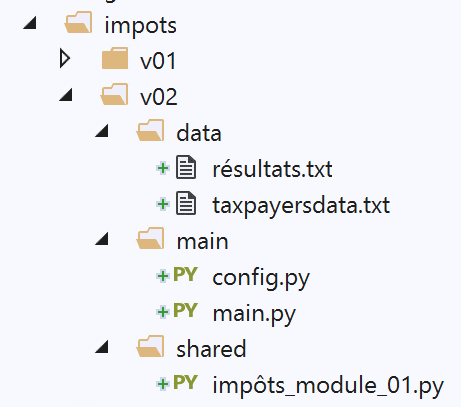

10. 应用练习：第 2 版

此新版本引入了以下文件 [config.py]：
def configure():
import os
# 此脚本所在文件夹的绝对路径
script_dir = os.path.dirname(os.path.abspath(__file__))
# 用于计算某些相对路径的根目录
root_dir = "C:/Data/st-2020/dev/python/cours-2020/python3-flask-2020/impots"
# 应用程序的依赖项
absolute_dependencies = [
f"{root_dir}/v01/shared",
]
# 应用程序配置
config = {
# 纳税人文件的绝对路径
"taxpayersFilename": f"{script_dir}/../data/taxpayersdata.txt",
# 结果文件的绝对路径
"resultsFilename": f"{script_dir}/../data/résultats.txt"
}
# syspath更新
from myutils import set_syspath
set_syspath(absolute_dependencies)
# 生成配置文件
return config
注释
- 第 5 行：获取包含正在执行的脚本（此处为脚本 [config.py]）的文件夹的绝对路径。因此，我们得到了文件夹 [main] 的绝对路径。该文件夹还包含主脚本 [main.py]；
- 第 8 行：当被引用的文件不属于应用程序文件夹时，将不使用 [script_dir] 来定位该文件，而是使用 [root_dir]。一旦应用程序在文件系统中的位置发生变化，就必须修改这一行；
- 第11-13行：列出了所有必须位于Python路径中才能使应用程序正常运行的文件夹的绝对路径。第12行引用了应用练习第1版中的[shared]文件夹；
- 第16-21行：在字典[config]中定义应用程序的配置。 此处需填写应用程序处理的文本文件的绝对路径。为此，我们使用 [script_dir]，需要提醒的是，此处它代表文件夹 [main]；
- 第24-25行：设置应用程序所需的Python路径；
主脚本 [main.py] 如下：
# 配置应用程序
import config
config = config.configure()
# 系统路径已配置 - 可以进行导入
from impôts_module_01 import calcul_impôt, record_results, get_taxpayers_data
# 纳税人文件
taxpayers_filename = config['taxpayersFilename']
# 结果文件
results_filename = config['resultsFilename']
# 代码
try:
# 读取纳税人数据
taxpayers = get_taxpayers_data(taxpayers_filename)
# 结果列表
results = []
# 计算纳税人税款
for taxpayer in taxpayers:
# 税额计算返回一个键值对表
# ['marié', 'enfants', 'salaire', 'impôt', 'surcôte', 'décôte', 'réduction', 'taux']
result = calcul_impôt(taxpayer['marié'], taxpayer['enfants'], taxpayer['salaire'])
# 词典已添加到结果列表中
results.append(result)
# 保存结果
record_results(results_filename, results)
except BaseException as erreur:
# 可能出现各种错误：文件不存在、文件内容不正确
# 显示错误并退出应用程序
print(f"L'erreur suivante s'est produite : {erreur}]\n")
finally:
print("Travail terminé...")
注释
- 第1-4行：配置应用程序；
- 第 7 行：配置完成后，Python 路径已正确设置，其中包含 [shared] 文件夹，该文件夹内包含脚本 [impôts_module_01]。从该脚本中导入所需函数；
- 第 9-12 行：使用的文件名在配置中查找。这些是绝对路径；
- 第 14-35 行：此处采用了第 1 版的代码；
版本 1 在 Python 控制台中无法运行。在同一控制台中，版本 2 给出了以下结果：
现在已不再出现任何错误。